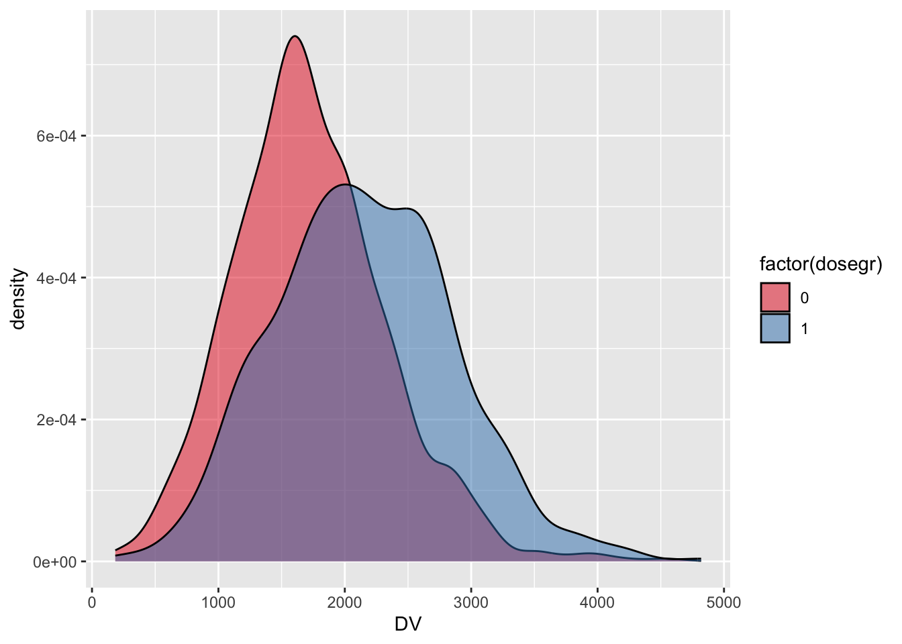

We had a user who was learning mrgsolve ask for a “complete example”. I wasn’t sure what exactly that meant, but I created this example and I’m sharing it today on the blog.
This is an invented example to illustrate features and workflow for mrgsolve. If you attend one of our training workshops, we work examples using published models to answer real questions you’ll encounter in drug development. So compared to the workshop material, this is a bit contrived. But I wanted to show how you might tackle a problem involving a population model from end to end.
1 Population PK model
- One compartment with first order absorption
- There are no ODEs in this model; the system is advanced for each time step through closed-form equations for the amount in each compartment
- Covariates: weight on clearances and volumes, sex on volume
- Log-normally distributed random effects on
CL,V, andKA - Reduced bioavailability fraction for oral doses
- Lag time for oral doses
- Combined additive and proportional error model
- Note: we resimulate residual error variates using
simepsuntil the simulated concentration is positive
- Note: we resimulate residual error variates using
Here’s the model specification ::: {.cell}
code <- '
$PARAM TVCL = 1.23, TVV = 35.7, TVKA = 1.3
F1 = 0.82, ALAG = 1.21
WT = 70, SEX = 0
$MAIN
double CL = TVCL*pow(WT/70,0.75)*exp(ECL);
double V = TVV*(WT/70)*exp(EV);
double KA = TVKA*exp(EKA);
if(SEX==1) V = V*0.8;
F_GUT = F1;
ALAG_GUT = ALAG;
$PKMODEL cmt="GUT CENT", depot=TRUE
$OMEGA @labels ECL EV EKA
0.015 0.2 0.5
$SIGMA @labels PROP ADD
0.03 230
$TABLE
capture IPRED = CENT/(V/1000);
capture DV = IPRED*(1+PROP)+ADD;
while(DV < 0) {
simeps();
DV = IPRED*(1+PROP)+ADD;
}
$CAPTURE WT CL
':::
Compile and load the model
We use mcode_cache here, which caches the model when you compile. If the cache is not invalidated, mrgsolve loads from the cache next time rather than re-compiling. ::: {.cell}
Building demo ... done.:::
2 Input data set
N=2000patients are simulated in this example- We simulate patient-level weight and sex using the
dmutatepackage - We create a flag in the data set for patients with weight greater than 90 kg
- Patients with weight less than 90 kg get a certain dose while patients with weight greater than 90 kg get a higher dose
- Dosing proceeds Q24H x 10 doses
set.seed(33020)
idata <-
data_frame(ID=1:2000) %>%
mutate_random(WT[50,110] ~ rnorm(80,30)) %>%
mutate_random(SEX ~ rbinomial(0.7)) %>%
mutate(dosegr = as.integer(WT > 90))Warning: `data_frame()` was deprecated in tibble 1.1.0.
Please use `tibble()` instead.
This warning is displayed once every 8 hours.
Call `lifecycle::last_lifecycle_warnings()` to see where this warning was generated.# A tibble: 2,000 × 4
ID WT SEX dosegr
<int> <dbl> <dbl> <int>
1 1 52.6 0 0
2 2 83.7 1 0
3 3 51.9 1 0
4 4 94.7 0 1
5 5 97.8 1 1
6 6 57.1 1 0
7 7 101. 0 1
8 8 73.0 0 0
9 9 56.3 1 0
10 10 69.7 1 0
# … with 1,990 more rowsThe dosing elements are implemented through event objects. ::: {.cell}
:::
The assign_ev function looks at the dosegr column in idata and assigns a dosing event sequence (e1 or e2) based on the value of dosegr.
time amt ii addl cmt evid ID
1 0 100 24 9 1 1 1
2 0 100 24 9 1 1 2
3 0 100 24 9 1 1 3
4 0 150 24 9 1 1 4
5 0 150 24 9 1 1 5
6 0 100 24 9 1 1 6NOTE: this is just one way to set up a data_set for mrgsolve. It might not be the best approach for your problem: maybe it’s too complicated, maybe not complicated enough. See other examples in the blog about creating input data sets or using event objects in your simulations.
3 Simulation
- We “carry” (copy) the dose group indicator into the simulated output (
carry_out) - Also, we only collect observation records in the output (
obsonly) mrgsolverespects the seed you set inRusingset.seedso that results are reproducible
set.seed(11009)
out <-
mod %>%
data_set(data) %>%
idata_set(idata) %>%
carry_out(dosegr) %>%
mrgsim(delta=1, end=360, obsonly=TRUE)
outModel: demo
Dim: 722000 x 9
Time: 0 to 360
ID: 2000
ID time dosegr GUT CENT WT CL IPRED DV
1: 1 0 0 0.00000 0.00 52.56 0.9589 0 19.92
2: 1 1 0 0.00000 0.00 52.56 0.9589 0 12.37
3: 1 2 0 29.31933 51.23 52.56 0.9589 3236 1954.41
4: 1 3 0 7.97557 68.80 52.56 0.9589 4345 5355.78
5: 1 4 0 2.16955 70.36 52.56 0.9589 4443 3438.75
6: 1 5 0 0.59017 67.74 52.56 0.9589 4278 3689.13
7: 1 6 0 0.16054 64.18 52.56 0.9589 4053 4843.27
8: 1 7 0 0.04367 60.52 52.56 0.9589 3822 5287.744 Output presentation
- For some plots, we use a
plotmethod formrgsimsobjects (the object that is returned from themrgsimfunction - For the other plots, it’s really just turning the
mrgsimsobject into adata.frameand have at it withggplot2 - Other than the quickie
lattice-based plot method that I only use for quick looks at the output,mrgsolve(by design) lets you use packages likedplyrordata.tableorggplotor other greatRpackages that are already out there for summarizing and plotting data - But notice that
mrgsolveprovides methods for sending themrgsimsobject directly into adplyrdata summary pipeline
This shows the plot method for mrgsims objects ::: {.cell}
:::
The mrgsims object can be passed right into dplyr::filter ::: {.cell}
:::
Simulated day 10 concentration versus patient weight by dose/weight group ::: {.cell}
`geom_smooth()` using formula 'y ~ x':::
Density plots of day 10 concentrations in the two dose/weight groups ::: {.cell}
ggplot(tr,aes(x=DV,fill=factor(dosegr))) +
geom_density(alpha=0.5) +
scale_fill_brewer(palette="Set1")
:::
5 Summary
This example illustrated how to code a population PK model in mrgsolve format, create input data sets with varied dosing and covariate values, simulate, and plot some results. I also hope this example illustrates the design priorities for the mrgsolve workflow: we always try to leverage existing functionality available in R (such as dmutate, dplyr and ggplot) rather than re-creating our own inside the mrgsolve package. This might require you to write some more code, but ultimately it gives greater flexibility to get the simulation that you need for your project.
We regularly do work with models that are more complicated and design simulations that have bigger demands than this example here. We’d be happy to discuss more-complicated applications that you might be needing for your project work. For now we hope this example will give you some ideas how you can add complexity to your simulation project today.